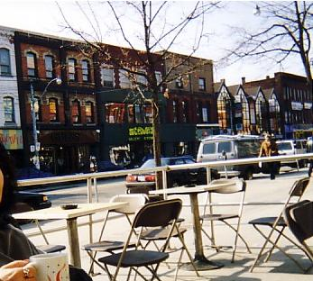
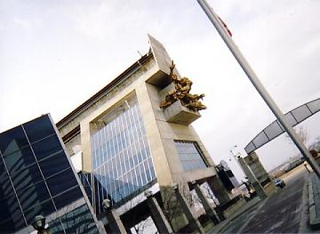
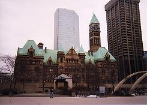
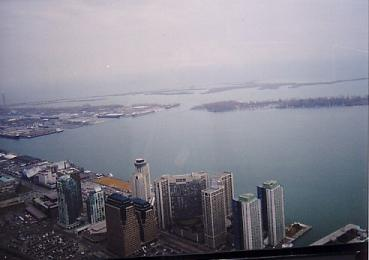

三日目のこの日からはいよいよ自由行動です。
モーニングコールはない。
バスの出発時間合わせて急いで身支度を整える必要もない。
忘れ物はないかと部屋中を見回って荷物をまとめる必要もない。
そして…朝食もない！
しかあーし、もう二度と来られないかも知れないというこおーんな遠いところまで来て、なんで寝坊なんてしていられよう。。。
といっても７時過ぎなんですが（＾０＾；）目が覚めてしまった私がもそもそと起き上がると、Aさんが眠そうに片目だけを開けてもう少し寝ていたいといいますので、
信じられなーい
と細い目を思いっきり見開いて仰天しましたが、そんなことは人それぞれの考え方があるのだから「カラスの勝手」というもので、ビンボー性の私は一人で探検に出掛けることに決め、なるべく静かに洗顔などを済ませて部屋を出ました。
ホテルは立派な市庁舎の近くにあり、道路と道路に挟まれた1ブロックの半分の敷地を占めた市庁舎の建物の横は、池やモニュメントが置いてあったりする公園になっており、そこから引き続いて、道路を渡って2ブロックほどの細長い公園になっているようなので、市庁舎の周りをゆっくり見て歩いた後、園内をぶらぶらと歩き始めました。
生垣とか柵というものがほとんどないそこは、時期的に花の入っていない花壇などで通路らしきものはできているのですが、どこからでも自由に出入りすることができ、通勤する人たちの近道としても利用されているようで、時折足早に横切っていく人の姿も見られますが、お年寄りが早くから目が覚めるというのは万国共通のようで（私もその1人？）、ご夫婦らしきジッチャンとバッチャンが仲むつまじくゆったりとした時間を楽しんでおられる姿があちこちで見られました。
もともと子供を遊ばせるという趣旨の場ではないようで、遊具などはひとつもなく、植えられている樹木がすべて落葉樹であるためか、夏は緑がいっぱいで木陰が涼やかかも知れませんが、まだ冬バージョンの裸木ばかりのこの時期はなんとも言えないシンプルさで、木々の向こうに見える町並みを眺めながらのんびり歩き、メイン道路になっているらしき広い道路に突き当たって公園の端まで来てしまったので、もう少し歩いてみようと左に折れてその道路に沿った歩道を歩いてみます。
トロントというのは先住民の言葉で「人が集まる場所」という意味だそうで、様ざまな国の人々が足早に歩いていきます。
そんな中で一人のんびりと、オノボリサンよろしくキョロキョロしながら歩いている私は、ちょっと違和感が感じられるのか、なんとなく擦れ違う人の視線がちらり ちらりと向けられる。
治安はいいところだと聞いているのですが、一応私どこも変なところないよね？
と、まだ店内の暗いショウウインドウを鏡代わりにさりげなく全身をチェックしてみる。。。
あ！ もしかして、今 何か期待しました？
残念ながら何も恥ずかしい身なりはしていませんでしたよぅ（≧ｗ≦
街はごみなどもあまり落ちておらず、気持ちがいいのでついつい先へ先へと進んでしまい、ちんちん電車が走る道路を渡り、プリンセス通りとか何とか通り（忘れました）とかも渡って、気がつくとかなり歩いたようで、ここで引き返すことにしましたが同じ道を帰るのではつまらない。
一本中道に入ってみると大きなデパートがあり、しばらく行くとチャイナタウンらしき町並みになってきて、市庁舎の横を通り過ぎてホテルの裏側あたりに小さなファーストフード店を発見しました。
部屋へ戻ってみるとＡさんが目を覚ましたところらしく、ベッドの上でぼんやりしておりますので、ファーストフード店をみつけたけどそこへ食べに行く？と聞いてみると、カロリーメイトを持って来ているのでコーヒーだけ買ってきて欲しいとおっしゃる。
ひぇぇ…私に一人で買ってこいと？（。。;;;
英語なんてほとんど喋れない私に何を言うんじゃ？
と、思ったのですが、そんなことを言ってるようではいかん！ 行ってみればなんとかなるさ。。。とばかりに、再び部屋を出てファーストフード店へ。
２～３種類のパンを（なんとか）買い、さてコーヒーなんですが、３種類のものがあるようで、Aさんも私もブラック党なので、
「ノーシュガー＆ノーミルク ２セット」
と言って、日本の紙コップの倍くらいありそうな容器に入ったコーヒーを二つ買って帰ってきたのですが、これが甘過ぎてひと口ふた口でふたりとも手が出ませんでした（＾_＾；
腹ごしらえも終わり、身支度も整え終わって、いざ出陣とばかりに街へ繰り出します。
トロントはカナダでも一番初めに地下鉄ができたのだそうで、地上には先ほど見たちんちん電車も走っているので、どこへでも移動が簡単ですが、まずは露天市があるという通りへ行くことになり、地図でみるとそんなに遠くないので歩くことになりました。
ついさっき下見（？）をしたばかりの大通りを歩いて、目的地へ行きましたが、露天市にはまだ少し時間が早かったようで、ちらほら準備をしているらしき様子を眺めながら、通りを挟んで両側に並んでいる小さな店々を覗き込んで行きますが、昔の映画に出てきそうなほどよくカラフルな家並みが素敵な街です。
ふわぁんと漂って来たコーヒーの香りに誘われて、じっと座っているにはちょっと寒かったのですが、おひげのお兄さんがオーナーらしきオープンカフェで美味しいコーヒーを飲みました。

ここで手に入れたものは、娘へのお土産のマップ柄のストッキングとバーゲンになっていたフリースのジャケットで、バッグ専門店ではAさんが持っていた「K」マークの手提げ袋を、お店の人からどこで買ったのかと聞かれ、やっぱりブランド品というものはどこへ持って行っても女性の気を引くものらしい。。。
その後、世界一高いCNタワーを目指して適当に歩いていたのですが、
「見て！ 見て！」
なんとビルの壁から等身大の人形が乗っている真っ赤なオープンカーが飛び出していて、ここはなんぞや？と見てみるとさるテレビ局で、ユーモラスな看板にほえぇー！
「あ！」
なんでもない住宅街にあるちょっとした空き地といいますか、公園になっているのか、枯れ木の間を黒い物体がちょろちょろと動いて回っているのが目に入りました。
リスです。
木の枝を伝って素早く近くの家の屋根の下に入って行ったのですが、しばらく待ってみても出てこないところをみますと、どうやらトロントでは天井裏にネズミではなくリスが住んでいるらしいと決めることでその場所を離れることができました。（＾m＾；

CNタワーの近くでも建物の壁から飛び出した像を見つけました。
写真ではちょっと解りづらいかもしれませんが、体育館のような建物の上の方に何体かの人物像が飛び出しています。
この体育館のようなところのすぐ近くにCNタワーがあり、私たちは地図を頼りにそこまで歩いたわけではなく、そこに見えているタワーを目指してめくらめっぽうで進んでいったので、もしかすると裏口から入ってしまったのか、タワーの下にたどり着いてみると倉庫のようなところで、上を見上げて確かにタワーがあるその入り口も、チケット売場があってエレベーターの入り口があるのでそれとわかりますが、その周りは英語で書かれた看板が一枚あったばかりで、それらしき公園とか花壇もなんにもないところにあってちょっと意外でした。
このタワーはエッフェル塔のような鉄塔型ではなく、丸い柱がつくーんと立っていて途中にドーナツを置いたように展望台があるという形で、現在のところ自立している塔としては世界で最も高いということです。
高速エレベーターですいっと展望台まで行ってしまうのでそんなに高く上がったという気がしないのですが、高さは550mで、展望台だけでも東京タワーより高い350mあります。
トロントに超高層ビルが建ったときに周辺でテレビにゴーストが出るようになったため、難視聴地域の解消のために建てられたのだそうで、電波塔になっています。
展望台には「360」という1時間に1回転するレストランがあり、すでにお昼には遅いくらいの時間でしたが、朝食が遅かったせいかそんなにおなかが空いていなかったので、飲み物だけで眺めのよい窓際の席を陣取りますと、すぐ近くにオンタリオ湖があり、こんなに高いところから見ても向こう岸は見えず、水平線が広がっていました。
比較的近くに細長い島があり、港から船で行けるようで、長い滑走路の飛行場があって小型の飛行機らしきものが時折飛んでいったり降りてきたりしています。
駐車場の車がまるで箱庭のなかにあるように小さく見え、メイン道路に沿ったバンク街のビル群も下の方に見え、そんなに大きくはないトロントの町が一望にできるといった感じでした。
レストランから出ると90cm四方ほどのガラスの床があり、お相撲さんがその上に乗っている写真がありましたが、高所恐怖症の私にはとてもじゃありませんがその上に立つことはできませんでした ＼（≧。≦；ノ
「お腹すいた。。。」
でも、パンもファーストフードももういらん。
うどん。。。は、ないか。。。（T_T ナイナイ
カレーライスでもいい。
パスタとか。。。
何を贅沢なことを。。。とはいうものの、パン食もたまにはいいのですがここまで続くとちょっと音を上げたくなります。
インスタントラーメンでもいいから、ちょっとパンから離れたい気分の私。
CNタワーを下りた私たちはまたもや気まぐれに歩き、往きとはうって変わって歩道いっぱいに商品が並ぶ露天市の道筋に戻ってきましたが、そろそろお腹がすき始めているので見るだけショッピングもパスして、レストランらしき店を探して歩きますが、行けども行けどもそれらしき店はありません。
メイン通りから離れた中道を歩いていますと、住宅街の一角に空き地があったりするのはどこにでもある風景ですが、雑草が生い茂っていたり不法投棄のごみが散乱しているといったことはなく、私たちが見て歩いた限りでは、どこも花壇とかベンチこそありませんが、ところどころに木が植えられて公園のようにきれいになっており、リスが遊んでおりました。
リスを見ていてもおなかは膨れませんので、食べ物にありつくにはメイン道路に出なければならないと気付いて、広い通りに出て地下街へ入りましたが、結局はファーストフード店のような店しかみつからず、なにはともあれお腹を満たさねばとその店に入りました。
メニューは勿論英語で書かれていますが、なんとかどんなものなのかは想像ができそうなものばかりなので、Aさんはポテトチップスなんとかというものを、私は無難そうな野菜サンドイッチを注文しました。
ポテトチップスというかさばるものが入っているせいか、Aさんの前に運ばれてきたものはバスケットにオテンコ盛（山盛り）のポテトチップスに埋まったサンドイッチ。
顔を見合わせたまま、言葉を失う二人。
少食のAさんはポテトだけでお腹が膨れてしまったようで、残ったサンドイッチを持って帰ろうと
「テイクアウトOK？」
と店の男の子に聞きますが、「テイクアウト」という言葉が通じないのか発音が悪いのか、持って帰りたいという意味の単語を並べ立ててみたのですが、どれも通じないようで、旅行用の英会話集を持ち出してやっと解決し、きちんと袋に入れてもらってお持ち帰り。
部屋に入ってしばらくすると
「これ。。。なんだろう？」
Aさんがベッドの枕元にあった一枚のメモをみつけました。
「Thank you。。。？」
こうして文字にしてみると何のことはないのですが、メモが置いてあるということ自体これまでに経験のないことで、二人して
「さんく ゆうってなんだろう？」
と、大真面目で悩みました。
どちらからということもなくその意味に気がついて、あまりにも間が抜けすぎたこんなことは、ちょっとやそっとでは友達にも話せないと大爆笑。
「でも、何のお礼なんだろう？」
「まさか枕チップのお礼ってことはないよね？」
片付けられたテーブルの上のパズル誌を動かすと、何かがコロンコロンと床に転がって、拾ってみると残り２日間の枕チップにとペンシルケースに除けておいた1$硬貨で、もう一枚あるはずのものがどう探してもみつからない。
どうやらペンシルケースのファスナーがちょっとだけ開いていて、掃除の際にひとつが転がり落ちて「Thank you」となったらしいと判明。
この日の夕食はオプショナルで和食の店に連れて行ってもらえるように頼んであったので、さてさて他所の国で食べる和食ってどんなものが出てくるのやら。。。と楽しみにしており、と言うよりは、やっとまともな食べ物にありつけるのかという期待を持って、迎えに来た旅行社の車に乗り込むと、昼間にうろうろしていたあたりに入り込んで、「あ」も「す」もなく到着。
格子戸を開けるとそこはもう日本のお蕎麦屋さんと言う感じで、入り口にはトックリを下げた小さめのお狸さん。
縄の椅子。暖簾。スダレの壁掛けなどが品良く日本を演出しています。
女の子は作務衣の上だけのようなものを着ており、まずは日本茶が出てきました。
刺身にてんぷら、しっかりと味の滲みた大根の煮物に茶碗蒸し、小さいながらも鮭の塩焼きにゴマをまぶした何かの揚げ物、ほんのひと口ほどの蕎麦。。。こんなに豪華なものでなくってもいいのですが、白いご飯と味噌汁が嬉しかったです。（日本人ですねぇ）
遠い外国まで行ってなんで和食なんだ？と言われてしまいそうですが、お米が長粒米でまずご飯がおいしくないんです。
そこでどうしてもパンが主食になってしまうので、ご飯党の私は白いご飯に漬物というものが欲しくなってくるというもので、素うどんとかお粥などが食べたくなるのは脂っこいものが多いせいでしょう。

翌日の朝はさすがに疲れが出てきたのか目が覚めたら8時をまわっており、この日はちょっとだけ近所を歩いて、昨日は休業日だったのか閉まっていたコンビニというよりはドラッグストアーのような店に入り、倉庫のように殺風景な広い店内にぎっしりと並んだ棚の間を縫ってあれこれ見ていますと、文房具からスナック菓子、日用品もあれば薬もあり。。。退屈をすることなく一時間ばかりを過ごし、ユニークなミニシールのセットを買ってきました。
写真は市庁舎だったと思うのですが、もしかしたら図書館か何かだったかもしれません。
ビルの林立する街中に、まるでお城のような建物でホテルの近くを歩いている途中で写したものですが、その時は覚えていても忘れてしまうもので、やっぱり何かひと言説明を書いておかないとダメですねぇ。。。
部屋に帰るとAさんも起きており、この日はホテルの四川料理店で朝食をしようと出掛けました。
メニューを手渡されて見てみますがどんな料理なのかさっぱりわからず、
「日本語の話せる人いないの？」
と聞いてみますと、間もなく１人の男の子がやってきて、たどたどしい日本語で応対してくれ、料理の説明もしてくれましたので一品ものを５種類くらい頼み、おかゆと一緒に二人で色々なものを少しずつ食べていましたが、頼んだ覚えのないものが一品やってきて、
「こんなものは頼んでない」
と、言いますと、
「自分で頼んだもの食べる！」
と言って、頑固にゆずりません。
一品だけだからまあいいのですが、それは肉団子のようなものでかなり油のきついものだったので、二人して朝っぱらからこんなものは食べたくないという気分。（＾～＾；
でも食べましたけど。
朝食を済ませた後は、これと言って予定も立てていなかったので、ちょっとデパートを覗きに行こうということになりましたが、次の予定が何もないので時間制限はないも同じで、とうとう一日をそこで過ごすことになってしまいました。（＾m＾；
私はあまりよくは知らなかったのですが、このデパートは世界的にも有名なデパートであったらしく、私たちが興味を引きそうなものがあっちにもこっちにもあって、何よりも嬉しいのが三月の初めということで冬物の大バーゲンになっていたことです。
中でも一番の目玉が革製品で、50％ offとか60% offなどと書いた紙があちこちに貼ってあり、さすがに昔から毛皮の交易が行われていた街で、トロントに来る途中で買ってきた鹿革の財布もかなりお買い得でしたが、バーゲンとなっているここでは目を疑いたくなるほど
前々から欲しいと思っていた小さ目の革製トートバッグをみつけ早速買い求め、ショルダーになっていてポケットのついたこれは、今でも大活躍をしています。
スーツケースの1/3は確実に陣取りそうで買おうかどうしようかと悩んだのがだんなのコートで、それもジャンバーにすべきかコートにすべきか更に悩み、結局は買ってしまったのですが、仕事着とパジャマだけで大半を過ごしているだんなは、滅多に私服を着て出掛けるなんてことがないので、これはあまり着て貰えず失敗でした（＾へ＾；
コートを買うときにカードで支払いをし、差し出された伝票にサインをしていますと、店員さんがじいーっと私の手元を見ており、漢字がカッコいいというようなことを言います。
トロントは日本人観光客が多いところだと聞いていましたが、そういえばあまり日本人を見かけません。
ツアーではみんな免税店に行ってしまうので、デパートで買い物をするということがないのか、漢字を書いているところを見るのは初めてなのだそうで、こんな下手くそな字でも
「ワンダフル！」なのか。。。
と、若い店員さんたちと単語並べまくりでしばしおしゃべりを楽しむ。
なんといってもデパートですから、日本のデパートでも一旦足を踏み入れたらちょっとやそっとでは出て来れないというもので、おまけに並んでいる品物のセンスが日本とはちょっと違っているので、どこのお店を覗いても退屈をするなんてことはなく、お土産になりそうなものを求め、手頃に買えそうな小物を求めてまあ時間の経つのが早いこと 早いこと。。。
この日も朝食が「ブランチ」になってしまったので、お昼はデパート内の小さなお店で何か（覚えてないから多分つまらないもの）を軽く食べ、夜のオプショナルがステーキを食べて生ジャズを聴きに行くというものだったので、それに備えたつもり。（＾m＾；
この日が最後の日でもあり、私たちも上手にお金を使ったもので、もう残っているお金は二人とも硬貨がお財布の中でジャラジャラしているばかりです。
オプショナルは出発前に決めてしまっていたのですでに支払いは済ましてありますし、枕チップのお金もよけてあるのでもうなんにも心配はありません。
この旅行でAさんに教えていただいたのが現地の空港で換金するということで、私たちは到着したときに3万円をカナダドルに換金し、革の財布をいくつか購入したお土産やさんとだんなのコートはカードを使いましたが、他のお土産と食事はなんとそれだけで賄ってしまったんです。
買ってきたものを鞄に詰め込んだり、ホテル内の売店などを覗いたりして時間をつぶし、お迎えに来た旅行社の人にこれから行くお店ではお金がいるのかどうか聞いてみると、飲み物はついてこないので少しだけ必要だと言われ、
「私たちもうお金ないんです。。。」
と言って二人の財布から出した小銭を見せると、
「これだけあれば大丈夫」
と、二人のお金をフロントで（セントばかりでした）ドルに換金してくれ、それを持って私たちは車に乗り込みました。
今度はちょっと走りました。
ネオンの瞬く繁華街を抜け、「レ・ミゼラブル」の大きな看板を掲げたオペラハウスの前を通り、二人だけでは怖くてとても行けそうにない裏通りを通って車が止まったところは、どうひいき目に見てもレストランには見えない、どちらかと言えば裏口のような木製のドアがあるだけで、もしかしたらそのドアの上に小さな看板くらいはあったのかもしれませんが、ちょっとアヤシイ雰囲気の入り口から中へ入るように言われました。
ちょっとドキドキものでしたが、ドアを潜ってしまうと何のことはない普通のレストランで、ステーキははっきり言ってそれほどのものではありませんでしたが、食事が終わると残っていた飲み物を持って二階へ上がり、細長いテーブルを挟んで両側にある席を奥から詰めていくかたちで座ると、どの席からも見えるように小さなステージがあり、5人くらいのバンドメンバーが演奏を始めました。
曲は聴いたことのないものばかりでしたが、やっぱり生はいいです。
何がどうよかったのかと聞かれてもそっち方面には疎いので、上手く説明ができませんが、一時間ほどの演奏の間息もつけなかったように、終わったときは二人して思わずほうーっ！と大きく息をついてしまいました。
ということで、最終日も何事もなく無事ホテルに帰りつき、あとはもう帰るばかりです。
翌朝早くにホテルを出まして、空港ではわずかばかり残った二人のお金を手に乗せて、
「これで買えるミネラルウオーターはありますか？」
とお店で聞いてみたところ、ほんのちょっと足りなかったようですが、おまけして貰って一本の水も手に入れ、見事持ち金はなくなりました。（＾。＾；
ちなみに、カナダで買い物をすると（国税と州税だったと思いますが）いわゆる消費税のようなものがもれなく二重に掛かってきますが、旅行者が100C$（カナダドル）以上の買い物をした場合は、申告をすればいくらか戻ってくるそうですので、帰りの飛行機の中で申告書を貰うのを忘れないでください。

カナダの地を離れるにあたって、飛行機の中から見たものではないのが残念ですが、CNタワーから見たオンタリオ湖です。
真ん中左側にある岸を除いて、湖の中にあるのは全て向こう岸ではなく、小さな島です。
帰りの飛行機はとても空いており、私たちはそれぞれに窓際の席を二人分陣取り、縦になろうが横になろうが好き放題の姿勢でくつろぎ、往きとは反対に日付変更線を逆戻りするわけですから長い長い一日の始まりとなります。
往路はナイトフライでまったく窓の外が見られなかったので、帰りはしっかり空の上からカナダを見ていこうと下を見ていましたが、雲ひとつないフライト日和で、
ひろい ひろい ひろい。。。 どこまで行っても雪で真っ白な世界が広がっている地上の風景に目を見張り、まるでスケールで線を引いたように真っ直ぐな線が伸びているのが鉄道で、それが時折ぺきっ！と折れるように進路を変えてまた真っ直ぐに伸び。。。と、延々と繋がっている黒い線に唖然。
凍っているらしい大きな湖の上に幾つもの道らしき線が見られ、黒い点がところどころに見えたのは恐らくは車であろうと思われ、線のないところに見える黒い点は、もしかしたらなにか動物なのかもしれない。
やがて間近に見えるロッキー山脈らしき山々の上を飛び、かなり時間が過ぎてから外を眺めてみると、海が見えておりいつの間にか眠りについたようです。
成田空港に到着して、またまた長い時間を待合室で潰し、名古屋に帰ってきた頃には雨が降り出しており、クマの宅急便に重くなったスーツケースを預けて家に帰りました。（預けたスーツケースは翌日の午前中には届いていました）
作成:2004-08-23
コメントはこちら